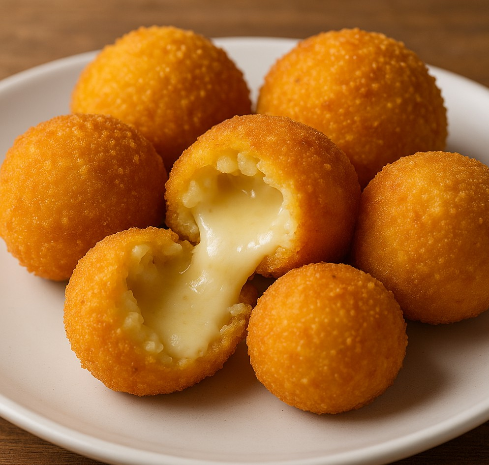

🥔 Crocchette di Patate e Formaggio

Descrizione
Le crocchette di patate e formaggio sono un antipasto sfizioso e saporito: croccanti fuori e filanti dentro, perfette sia fritte che al forno.
Ingredienti (per circa 10 crocchette)
- 500 g di patate
- 50 g di Parmigiano Reggiano DOP
- 1 tuorlo
- 1 pizzico di sale
Per il ripieno:
Per la panatura:
- 1 uovo intero
- 1 albume (avanzato dall’impasto)
- Pangrattato q.b.
Per la cottura:
- Olio di semi di arachide o extravergine d’oliva
Procedimento
- Mettere le patate con la buccia in una pentola con acqua fredda e portare a bollore.
- Farle cuocere finché diventano morbide, quindi sbucciarle e schiacciarle da calde.
- Unire tuorlo, Parmigiano grattugiato, un pizzico di sale e mescolare bene fino a ottenere un impasto omogeneo.
- Tagliare il Taleggio a cubetti o listarelle.
- Formare con l'impasto delle polpette, inserire al centro il Taleggio e chiudere bene dando una forma allungata.
- Sbattere l’uovo intero con l’albume avanzato.
- Passare le crocchette prima nell’uovo e poi nel pangrattato.
Cottura Fritta:
- Scaldare abbondante olio in una pentola dai bordi alti.
- Friggere le crocchette per circa 10 minuti, finché dorate.
- Scolare su carta assorbente.
Cottura al Forno:
- Disporre le crocchette su carta forno e spruzzare con olio evo.
- Cuocere in forno ventilato a 200°C per circa 20 minuti, girandole a metà cottura.
Note e Consigli
- Il Parmigiano nell’impasto è facoltativo.
- Puoi sostituire il Taleggio con mozzarella (ben asciutta).
- Sigilla bene le crocchette per evitare la fuoriuscita del formaggio.
- Per maggiore croccantezza, puoi fare la doppia panatura.
⬅ Torna alla Home